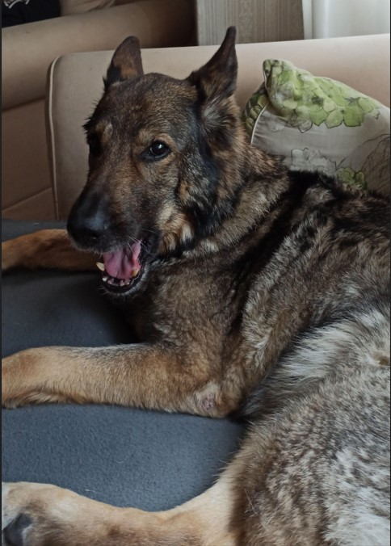

Sivuston aihe ja tavoite
Sivuston aiheena on Saksanpaimenkoira rotu ja saksanpaimenkoiran rodun edistäminen.
Saksanpaimenkoira on kiinnostava ja monipuolinen rotu. Rotu ansaitsee huomiota ja hoitoa. Tavoitteena on edistää rodun hyvinvointia ja ymmärrystä tarjoamalla tietoa ja resursseja.
Olen aina tykännyt Saksanpaimenkoirista, koska suvussani ja perheelläni on ollut saksanpaimenkoiria. Aihe on minulle todella tärkeä ja siksi haluan valistaa ihmisiä kyseisestä rodusta.
 Aida© 2023 Kaapo Karppinen